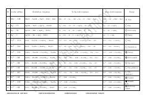

KAKimyoviy ionli tenglamalar va cho'kma reaksiyalari bo'yicha o'quv qo'llanma.
Ushbu qo'llanma kimyoviy reaksiyalarning ionli tenglamalarini va cho'kma hosil bo'lish jarayonlarini tushuntiruvchi jadval ko'rinishidagi materiallarni o'z ichiga oladi. Unda turli ionlarning o'zaro ta'siri va hosil bo'lgan moddalarning ranglari batafsil keltirilgan.